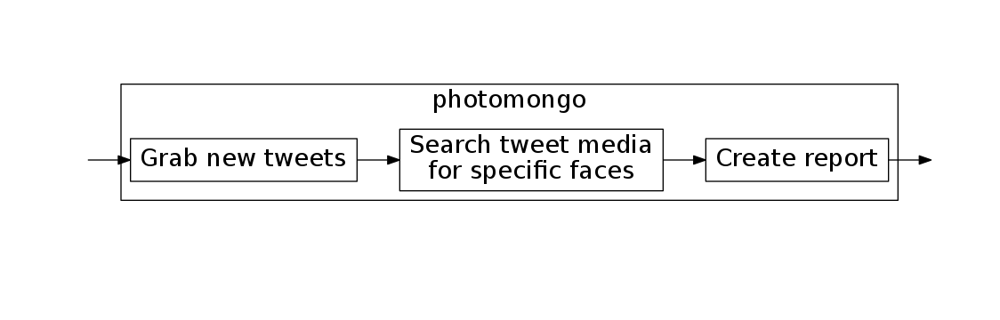
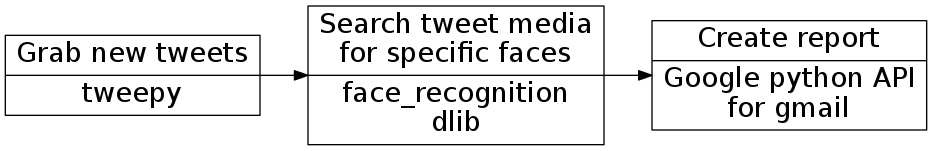
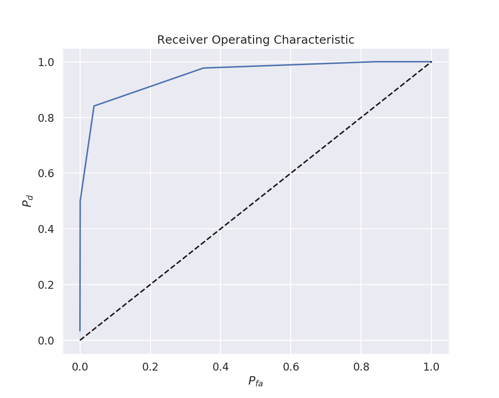

photomongo
Aaron Nielsen
apn@didactex.com
December 2018
Who am I?
- Chief Scientist for Didactex, llc
- Statistical signal processing and detection processing
- Educational background physics; experimental superconductivity
search for known faces on social media
Why photomongo?
- Schools don't live up to their expectations
- Parents need a way to monitor for concerns
How it works

written in python

facial recognition
- face_recognition python library by Adam Geitgey
- wraps dlib c++ machine learning library by Davis King

Performance Metrics

Exceedance

Receiver Operating Characteristic

Resources
- photomongo github repository
- tweepy library to access Twitter